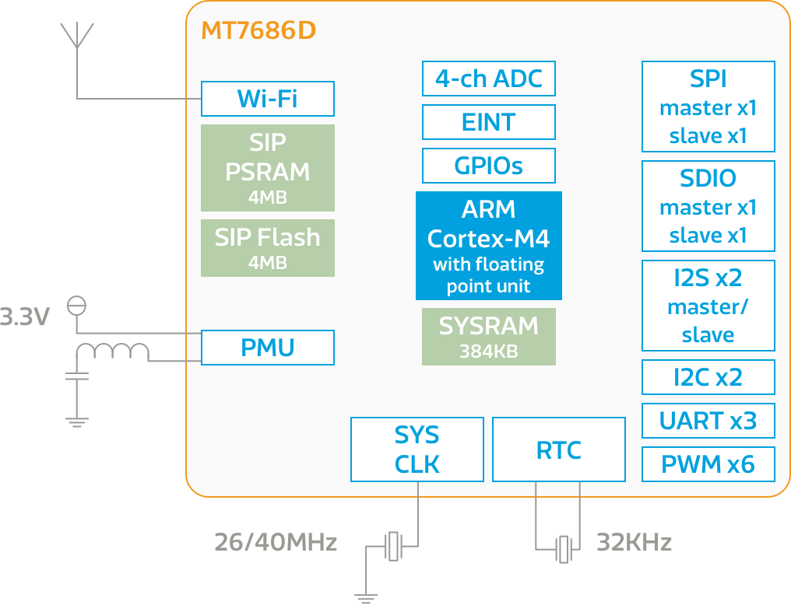

MT7686
Overview
聯發科技 MT7686D 是高度整合的系統單晶片，包含一個微控制器，低功耗 1T1R 802.11n 2.4GHz Wi-Fi 子系統，以及 PMU。微控制器為ARM Cortex-M4處理器，支援浮點運算，並且整合 4MB PSRAM 與 4MB 快閃記憶體。請查看比較表格以了解不同智慧家庭晶片間的差異。
主要功能
-
高度整合的射頻 + 微控制器 + 記憶體
-
低功耗的 RTC 模式
-
主要應用：智能家電、家庭自動化、智能裝置、物聯網橋接器、連接多重雲端服務
Wi-Fi 子系統支持 1T1R 802.11b/g/n 無線協定、基帶和 MAC，含有一個可以完全卸載微控制器運算負擔的網路處理器，旨在滿足低功耗和高輸送量的應用程式。
MT7686 支援許多週邊介面，包括 UART、I2C、SPI、I2S、PWM、SDIO 和 ADC。
